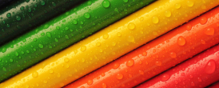

Color Symbolism and Culture
What do Colors Symbolize?
Colors hold significance for people around the world. Not only do colors influence emotion, but they also hold meaning in religion and various cultures. On this page you will get answers to questions like, "What does the color red symbolize?" This question is answered differently depending on where you are located in the world. If you don't see what you are looking for on this page, please put your questions in the comments section at the bottom of this page.
Color Symbolism Chart
Brown
Earth, stability, hearth, home, outdoors, reliability, comfort, endurance, simplicity, and comfort.
Orange
Energy, balance, enthusiasm, warmth, vibrant, expansive, flamboyant, demanding of attention.
Beige and Ivory
Symbolize unification. Ivory symbolizes quiet and pleasantness. Beige symbolizes calm and simplicity.
Purple
Royalty, nobility, spirituality, ceremony, mysterious, transformation, wisdom, enlightenment, cruelty, honor, arrogance, mourning, temperance.
Lavender
Symbolizes femininity, grace and elegance.
Pink
Symbolizes love and romance, caring, tenderness, acceptance and calm.
Red
Excitement, energy, passion, love, desire, speed, strength, power, heat, aggression, danger, fire, blood, war, violence, all things intense and passionate, sincerity, happiness (Only in Japan)
Yellow
Signifies joy, happiness, betrayal, optimism, idealism, imagination, hope, sunshine, summer, gold, philosophy, dishonesty, cowardice, jealousy, covetousness, deceit, illness, hazard and friendship.
Green
Nature, environment, healthy, good luck, renewal, youth, spring, generosity, fertility, jealousy, service, inexperience, envy, misfortune, vigor.
Dark Blue
Symbolizes integrity, knowledge, power, and seriousness.
Blue
Peace, tranquility, cold, calm, stability, harmony, unity, trust, truth, confidence, conservatism, security, cleanliness, order, loyalty, sky, water, technology, depression, appetite suppressant.
Turquoise
symbolizes calm. Teal symbolizes sophistication. Aquamarine symbolizes water. Lighter turquoise has a feminine appeal.
Black
Power, sexuality, sophistication, formality, elegance, wealth, mystery, fear, evil, unhappiness, depth, style, sadness, remorse, anger, anonymity, underground, good technical color, mourning, death (Western cultures), austerity, detachment..
Gray
Security, reliability, intelligence, staid, modesty, dignity, maturity, solid, conservative, practical, old age, sadness, boring. Silver symbolizes calm.
White
Reverence, purity, birth, simplicity, cleanliness, peace, humility, precision, innocence, youth, winter, snow, good, sterility, marriage (Western cultures), death (Eastern cultures), cold, clinical.
Color Symbolism Culture
Western World
Traffic lights
Power, sexuality, sophistication, formality, elegance, wealth, mystery, fear, evil, unhappiness, depth, style, sadness, remorse, anger, anonymity, underground, good technical color, mourning, death (Western cultures), austerity, detachment.
●●●
Patriotism
Most, if not all countries have a flag. The colors of each flag are usually seen as patriotic. Red, white, and blue symbolizes patriotism in the U.S.A.
●●●
Holidays
Red and green are favorite Christmas colours.
●●
Colors of Autumn such as orange, brown, yellow and red are associated with Thanksgiving with black and orange associated with Halloween. ●●●●
Pastel colors are used for Easter. ●●●●
Because flowers are a common gift for Mother's Day, colors such as yellow, pink, and red are used frequently.●
Colors of Autumn such as orange, brown, yellow and red are associated with Thanksgiving with black and orange associated with Halloween. ●●●●
Pastel colors are used for Easter. ●●●●
Because flowers are a common gift for Mother's Day, colors such as yellow, pink, and red are used frequently.●
Emotions
Blue is seen as conservative.
●
Red is power and aggression. When someone is angry they "see red." ●
Brighter colors such as yellow and orange represent warmth not only with emotions but also with temperature. When someone is seen to be afraid or "chicken" they are called "yellow." ●●
Cool colors are blue, green, black or any color with a dark shade. When someone is feeling down or depressed, it is said they are feeling "blue." ●●●
Red is power and aggression. When someone is angry they "see red." ●
Brighter colors such as yellow and orange represent warmth not only with emotions but also with temperature. When someone is seen to be afraid or "chicken" they are called "yellow." ●●
Cool colors are blue, green, black or any color with a dark shade. When someone is feeling down or depressed, it is said they are feeling "blue." ●●●
Ecology
Obviously green is the major color symbolizing ecology. The new phrase for people or companies who find ways to cut back on electricity, fuel, or things that damage the environment is "going green."
●
Phrases
When something is seen as opposite, extreme, or a firm position, it is said to be "black or white."
●●
When something is not clear or not in a firm position, it is said to be a "gray area." ●
The blues describe a form of music. ●
When something is not clear or not in a firm position, it is said to be a "gray area." ●
The blues describe a form of music. ●
Use in Medicine and Therapy
Colors are sometimes used in therapy (Also called Chromotherapy). Colors have a huge effect on people who have brain disorders or who are emotionally troubled.
The color blue has a calming effect on many people and lowers respiration and blood pressure. ●
Red has the opposite effect. ●
Some therapists use green to sooth and relax emotionally disturbed people who suffer from anxiety or depression. ●
Some claim that the color violet is good for migraines and in "cases of cellulitis caused by a poor elimination, heaviness or sluggishness after eating, disorders of the spleen, bladder and kidney." ●
Yellow helps energize people and relieves depression. ●
The color blue has a calming effect on many people and lowers respiration and blood pressure. ●
Red has the opposite effect. ●
Some therapists use green to sooth and relax emotionally disturbed people who suffer from anxiety or depression. ●
Some claim that the color violet is good for migraines and in "cases of cellulitis caused by a poor elimination, heaviness or sluggishness after eating, disorders of the spleen, bladder and kidney." ●
Yellow helps energize people and relieves depression. ●
Religion
Colours are also used in religious ceremonies or represent aspects of religion. Native Americans include colors in religious ceremonies. The Navajo Nation considers four colors to be important: Turquoise, white, yellow, and black. These colors represent four sacred mountains.
●●●●
The Apache Nation also considers four colors to be important: Green, white, yellow and black. These are sacred colors of the white mountain and are also used in government. ●●●●
The Iowa Nation also considers four colors to be sacred: Black, yellow, red and white. They represent direction, their flag, and what they consider to be four races of man. ●●●●
In Tibetan Buddhism, blue is the color of Vairochana, a celestial Buddha, whose image is the immensity of sky blue. ●
Buddhist monks wear orange (specifically the color saffron) robes primarily due to tradition. That was the least expensive color dye at the time and that is what they continued to wear. The robes themselves symbolize "simplicity and detachment of materialism." ●
The Apache Nation also considers four colors to be important: Green, white, yellow and black. These are sacred colors of the white mountain and are also used in government. ●●●●
The Iowa Nation also considers four colors to be sacred: Black, yellow, red and white. They represent direction, their flag, and what they consider to be four races of man. ●●●●
In Tibetan Buddhism, blue is the color of Vairochana, a celestial Buddha, whose image is the immensity of sky blue. ●
Buddhist monks wear orange (specifically the color saffron) robes primarily due to tradition. That was the least expensive color dye at the time and that is what they continued to wear. The robes themselves symbolize "simplicity and detachment of materialism." ●
Eastern World
White & Pink
●●
Are favorite color in marriage just as in the western world.
Green
●
Eternity, family, harmony, health, peace, posterity
Red
●
Happiness
Gray
●
Helpful
Blue, Gold & Purple
●●●
Wealth
White
●
Children, helpful people, marriage, mourning, peace, purity, travel.
Gold
●
Strength, wealth Evil or sadness- Just like in the western world - black ●
